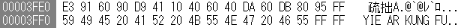
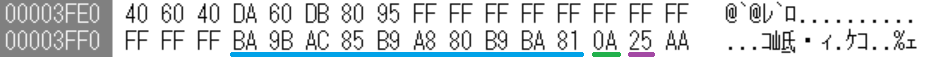
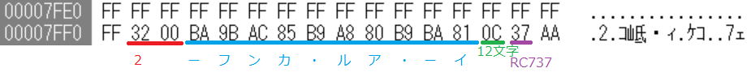
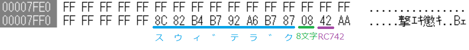
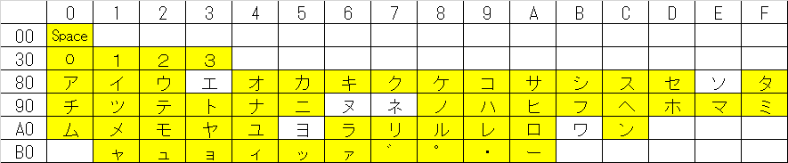
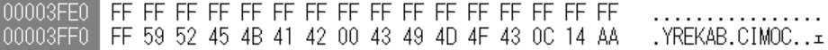
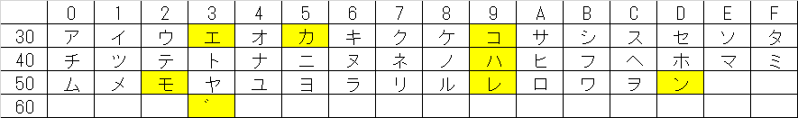
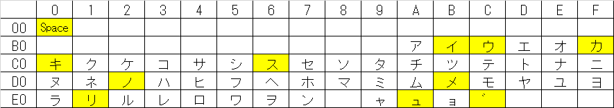

| RCxxx | ソフト名 | 文字列 | コメント |
| RC701 | けっきょく南極大冒険 | ｹｯｷｮｸ ﾅﾝｷｮｸ ﾀﾞｲﾎﾞｳｹﾝ | 文字列が無いバージョンもある。 |
| RC703 | タイムパイロット | ﾀｲﾑ ﾊﾟｲﾛｯﾄ | 文字列が無いバージョンもある。 |
| RC706 | ビデオハスラー | ﾋﾞﾃﾞｵﾊｽﾗｰ | 文字列が無いバージョンもある。 |
| RC714 | ぽんぽこパン | COMIC BAKERY | "COMIC BAKERY"が逆順で入っている。文字列が無いバージョンもある。 |
| RC718 | ハイパーラリー | ﾊｲﾊﾟｰﾗﾘｰ | |
| RC724 | コナミのベースボール | ﾔｷｭｳ | |
| RC725 | イー・アル・カンフー | ｲｰ･ｱﾙ･ｶﾝﾌｰ | "YIE AR KUNG FU"がそのまま入っているバージョンもある。 |
| RC727 | 王家の谷 | ｵｳｹﾉﾀﾆ | |
| RC728 | モピレンジャー | ﾓﾋﾟﾚﾝｼﾞｬｰ | |
| RC729 | ピポルス | ﾋﾟﾎﾟﾙｽ | |
| RC730 | ロードファイター | ﾛｰﾄﾞ ﾌｧｲﾀｰ | |
| RC731 | コナミのピンポン | ｺﾅﾐ ﾉ ﾋﾟﾝﾎﾟﾝ | |
| RC732 | コナミのサッカー | ｺﾅﾐ ﾉ ｻｯｶｰ | |
| RC733 | ハイパースポーツ３ | ﾊｲﾊﾟｰ ｽﾎﾟｰﾂ 3 | |
| RC734 | グーニーズ | ｸﾞｰﾆｰｽﾞ | |
| RC735 | コナミのゲームを10倍楽しむカートリッジ | 10 ﾊﾞｲ ﾀﾉｼﾑ ｶｰﾄﾘｯｼﾞ | |
| RC736 | コナミのボクシング | ｺﾅﾐ ﾉ ﾎﾞｸｼﾝｸﾞ | |
| RC737 | イー・アル・カンフー２ | ｲｰ･ｱﾙ･ｶﾝﾌｰ 2 | |
| RC739 | 魔城伝説 | ﾏｼﾞｮｳﾃﾞﾝｾﾂ | |
| RC740 | ツインビー | ﾂｲﾝﾋﾞｰ | |
| RC741 | 新世SIZER | ｼﾝｾｻｲｻﾞｰ | |
| RC742 | グラディウス | ｸﾞﾗﾃﾞｨｳｽ | |
| RC743 | 夢大陸アドベンチャー | ﾕﾒﾀｲﾘｸ ｱﾄﾞﾍﾞﾝﾁｬｰ | |
| RC746 | Ｑバート | ｷｭｰﾊﾞｰﾄ | |
| RC748 | がんばれゴエモン！からくり道中 | ｶﾞﾝﾊﾞﾚｺﾞｴﾓﾝ | 文字の割り当ては異なる。 |
| RC749 | 魔城伝説II ガリウスの迷宮 | ｶﾞﾘｳｽﾉﾒｲｷｭｳ | 文字の割り当ては異なる。 |



